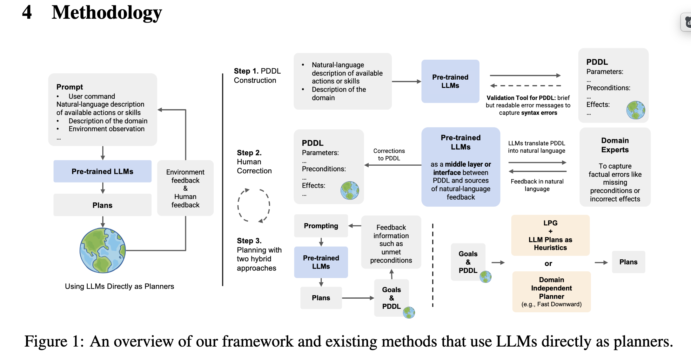
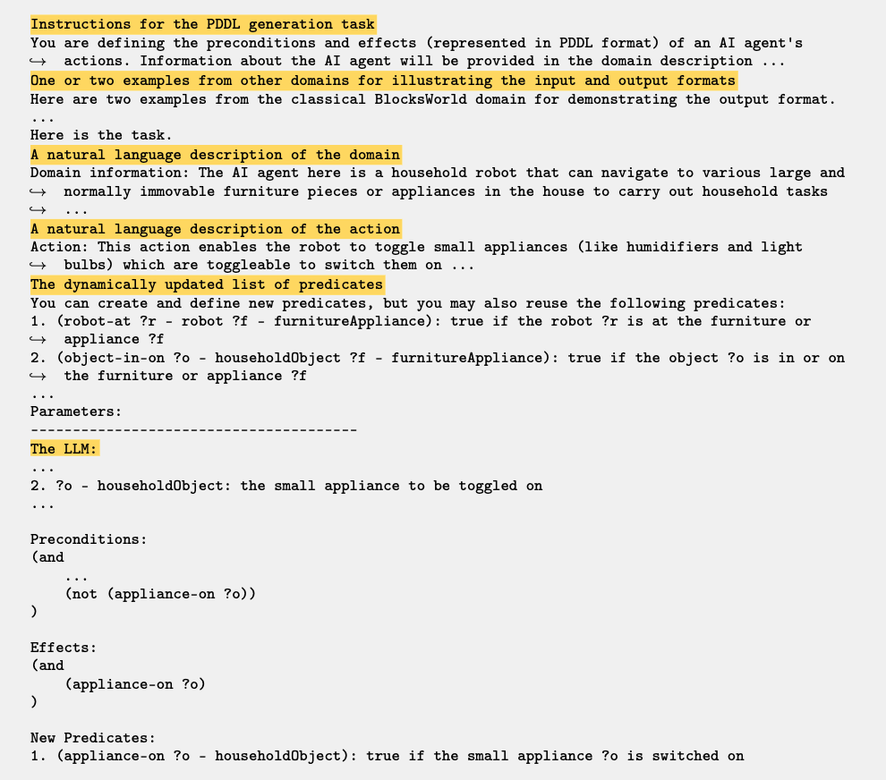
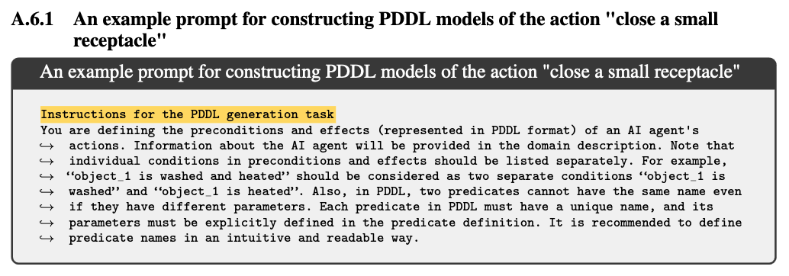
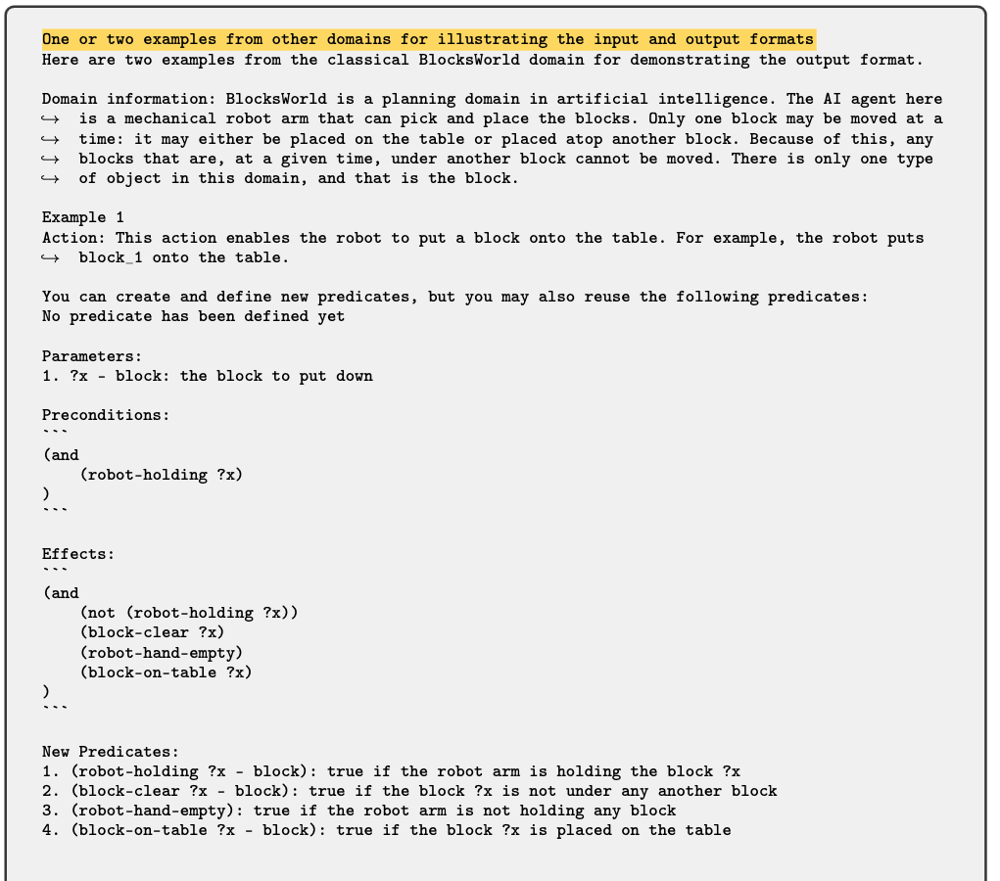
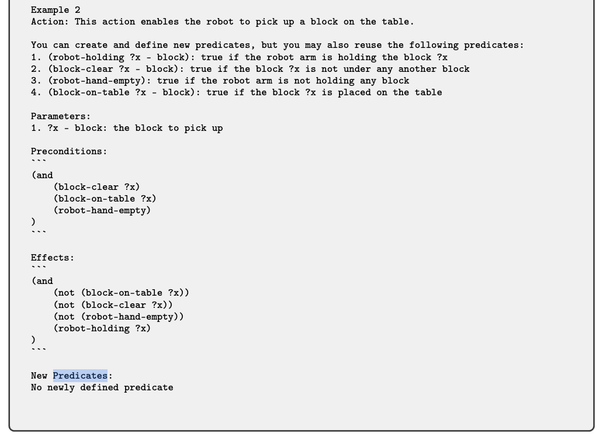
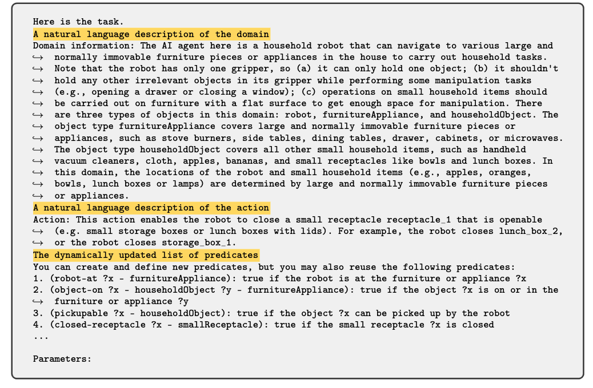
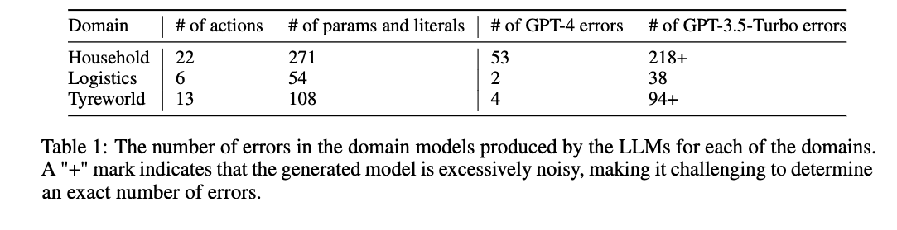

[TOC]
- Title: Leveraging Pretrained Large Language Models to Construct and Utilise World Models for Model Based Task Planning
- Author: Lin Guan et. al.
- Publish Year: 24 May 2023
- Review Date: Sun, Jun 4, 2023
- url: https://arxiv.org/pdf/2305.14909.pdf
Summary of paper

Motivation
- However, methods that use LLMs directly as planners are currently impractical due to several factors, including limited correctness of plans, strong reliance on feedback from interactions with simulators or even the actual environment, and the inefficiency in utilizing human feedback.
Contribution
- introduce a alternative paradigm that construct an explicit world (domain) model in planning domain definition language (PDDL) and then use it to plan with sound domain-independent planners.
- users can correct the PDDL before the real planning.
Findings
- GPT-4 can readily correct all the errors according to natural language feedback from PDDL validators and humans.
Some key terms
approach
- When providing the planner with a set of actions and their brief natural language descriptions, instead of directly mapping user commands to plans, we utilise LLMs to extract a symbolic representation of the action in the form of PDDL action models.
- our modular method essentially divides the planning process into two distinct parts, namely modelling the causal dependencies of actions and determining the appropriate sequence of actions to accomplish the goals.
autocorrection for PDDL
- PDDL validator in VAL.
how to utilise the generated PDDL action models
- first way: we use this PDDL to search for a plan using classical planner.
- second way: we use PDDL model to validate the plan in natural language. by providing corrective feedback in the form of unmet preconditions or goal conditions
- the author said in the second way, both plan generated by PDDL model and the plan generated by LLM planner can incorporate.
The prompting design
- Our approach involves prompting pre-trained LLMs with the following information: (a) detailed instructions for the PDDL generation task, outlining components of upcoming inputs and desired outputs; (b) one or two examples from other domains (e.g., the classical Blocksworld domain) for illustrating the input and output formats; (c) a description of the current domain, including contextual information about the agent’s tasks and physical constraints due to the specific embodiment of the agent; (d) a description of the agent’s action; and (e) a dynamically updated list of predicates that the LLM can reuse to maintain consistent use of symbols across multiple actions.

concrete example




Results

Issue
- This suggests that our framework relies heavily on GPT-4’s improved capability in understanding symbols, and future work may investigate how to enable the use of more lightweight models (e.g., by fine-tuning on some PDDL datasets)
Major comments
important assumption in the problem setting
- The authors assume that the agent is equipped with the low-level control policies corresponding to these high-level skills.
- however, one has to consider that interacting with LLM may take a very long computational time and we have to carefully design the feedback loop when we want to train the low-level control policies when LLM is involved.